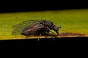
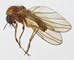

Key to families of Simuloidea
1.
- Wing comparatively short and broad, with a short and transverse R2+3 between R1 and R4+5.
Vein R4+5 distinctly arched on its basal half. Crossveins near base of wing. Antenna short in both sexes, with stout scape and pedicel,
and a short thin flagellum.


Thaumaleidae
- Wing with vein R2+3 usually vestigial or absent. Antenna short, about as long as head, rather stout; flagellum nearly bare,
or short-setose in both sexes. Wing broad, the posterior veins weak and poorly developed. Fork of CuA1 and CuA2 without petiole.


Simuliidae